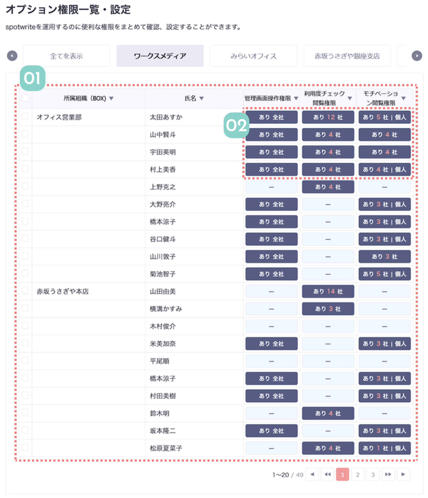

オプション権限一覧は、管理画面の利用を制限することができる画面です。
利用度の分析機能やモチベーションの分析機能は繊細な情報のため、見られる人を制限することができます。
リーダーなどに利用度チェック権限をつけると、管理画面が操作できない人でも自分のチームの利用度を確認することができます。

01
表で全員の権限を確認できます
表には選んでいる会社のメンバーが全て表示され、オプション権限を持っているかどうかがすぐにわかります。
権限を持っている人はありと表示され、持っていない人は「ー」と表示されます。
 関連機能
関連機能

会社ごとに絞り込んで表示することができます。
「個人」表示がある場合、メンタルの個人情報まで見られる権限を持っています